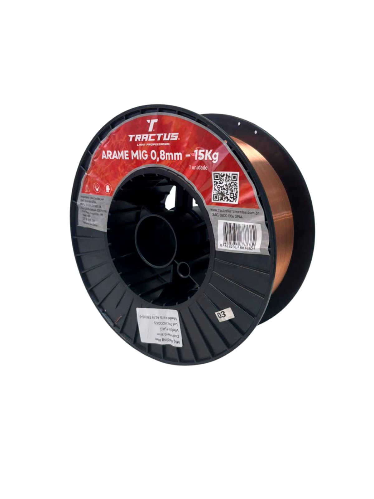
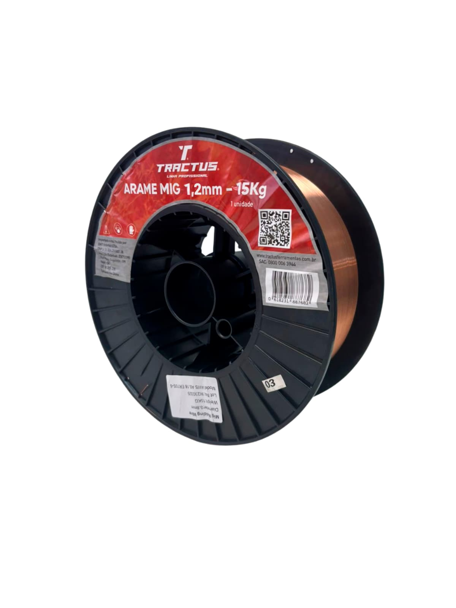
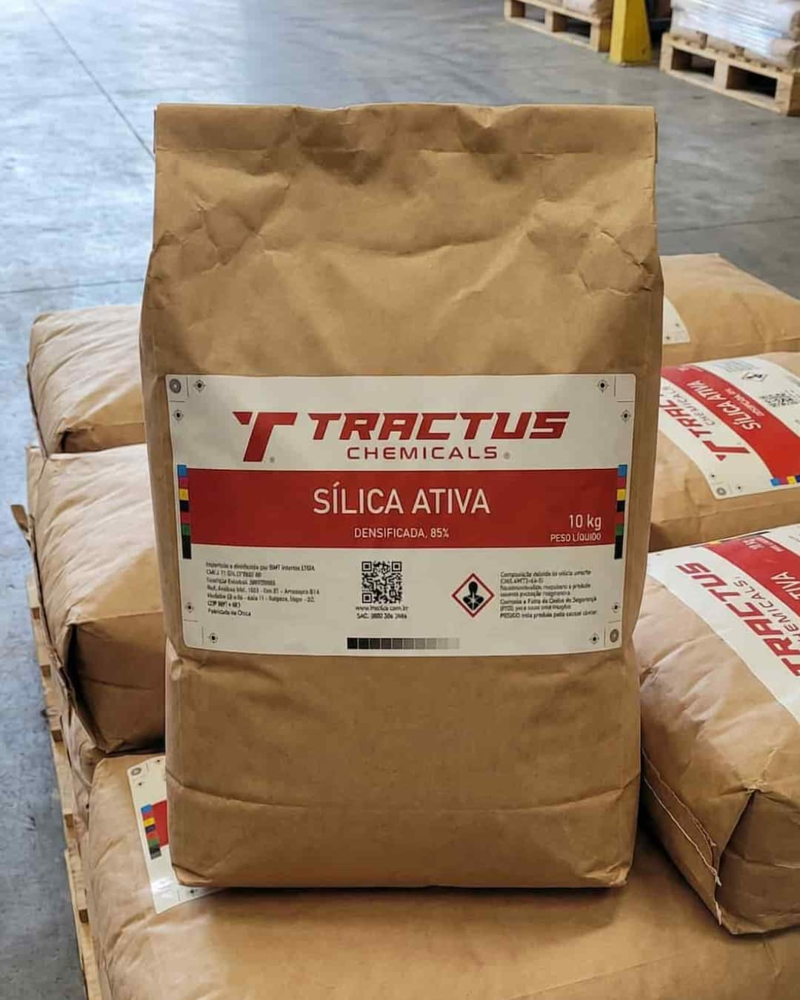

Componentes e Consumíveis Industriais
Operações RecorrentesOperações em que consistência do fornecedor, clareza de especificação e desempenho em fornecimentos recorrentes são essenciais.
Operações de importação de componentes e consumíveis industriais envolvem requisitos técnicos precisos, tolerâncias definidas e programas de fornecimento de médio e longo prazo. A variabilidade no fornecimento gera impacto direto na continuidade operacional do cliente.
A BMT estrutura essas operações com ênfase no alinhamento técnico prévio, na validação de fornecedores com base em capacidade real de atendimento às especificações e na previsibilidade da execução ao longo dos ciclos de fornecimento.
Atendimento sob especificação. A BMT busca os produtos que o seu processo exige — especificação técnica, norma, embalagem e volume são definidos com o cliente antes de qualquer sourcing. Os produtos listados abaixo são referências do que já operamos; outras especificações são atendidas mediante consulta.
- Consistência técnica entre lotes
- Clareza de especificação antes do sourcing
- Confiabilidade em fornecimentos recorrentes
- Documentação e rastreabilidade
Referências de produtos operados
Arame MIG Tractus — 0,8 mm Bobina 15 kg · Chapas finas

Arame de soldagem de aço carbono com revestimento de cobre para proteção contra oxidação. Compatível com gases de proteção Ar/CO₂. Indicado para operações que exigem cordão fino, boa fusão e aparência refinada em chapas leves e estruturas de baixa espessura.
Arame MIG Tractus — 1,0 mm Bobina 15 kg · Uso geral
Bitola de uso mais abrangente, equilibrando penetração e taxa de deposição. Compatível com a maioria das máquinas MIG semi-automáticas do mercado industrial. Desempenho estável em ciclos contínuos de produção com mínima variação entre bobinas.
Arame MIG Tractus — 1,2 mm Bobina 15 kg · Chapas espessas

Indicado para maior taxa de deposição e profundidade de penetração. Adequado a ciclos contínuos de produção e soldagem robotizada. Mantém uniformidade de fusão em chapas espessas e juntas de maior volume com baixa variação entre lotes.
Sílica Industrial (SiO₂) Grau industrial · Especificação por demanda

Insumo mineral de ampla aplicação industrial. Granulometria, pureza e teor de umidade definidos conforme os requisitos do processo do cliente. Rastreabilidade de origem e documentação de qualidade incluídas no fornecimento.